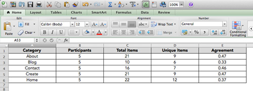
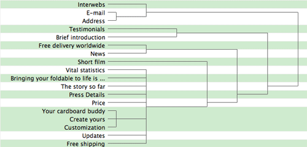
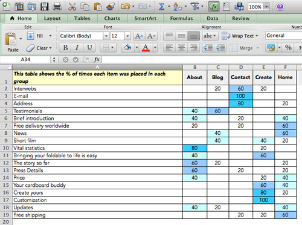
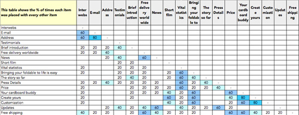

THE STUDY
I was asked to create a usability study for the site, Foldable.me. The study touches on several aspects of the site's navigational design, essentially the main pages of the site (home, create, about, blog, and contact). Specifically, for the purposes of this study, I look at how users take the information included within each of these pages and rearrange them in a way that is logical and makes the most sense to them.
CATEGORIES SUMMARY
From the spreadsheet above, we can conclude the following information.
- There was a total of 5 participants in this study.
- Total items per category ranged from 10 ~ 22.
- Unique items per category ranged from 6 ~ 12.
We can also conclude...
- Of the 5 participants, there was an agreement 47% of the time when it came to placing topics in the "about" page.
- Of the 5 participants, there was an agreement 33% of the time when it came to placing topics in the "blog" page.
- Of the 5 participants, there was an agreement 46% of the time when it came to placing topics in the "contact" page.
- Of the 5 participants, there was an agreement 47% of the time when it came to placing topics in the "create" page.
- Of the 5 participants, there was an agreement 37% of the time when it came to placing topics in the "home" page.
The results show that there were varying disagreements across the board when it came to deciding where topics fell and into which categories. Average agreement was only 42%. The categories that showed the strongest agreeement were the "about" and "create" pages at 47%. Least agreeable was the "blog" page at 33%.
TREE GRAPH
Using an average linkage clustering method I came up with a tree diagram calculating the distance between clusters in a hierarchical cluster analysis. The linkages, in this case shown in 15 groups, are shown in a green highlight.
The linkages illustrate the grouping of topics by each of the participants.
CATEGORIES x ITEMS
This table further illustrates the percentage at which each topic is placed in a certain category (page). From this table of participant responses, we can conclude the following:
- About
- Vital statistics was chosen highly among participants for this category at 80%.
- The story so far and press details also were chosen highly for this category at 60%.
- Blog
- Participants chose testimonials 60% of the time for this category.
- News and short film were also chosen 40% of the time.
- Contact
- E-mail showed an incredibly strong correlation to this category with participants choosing it 100% of the time.
- Address was another topic that showed a strong correlation to this category at 80%.
- Interwebs showed a fairly strong correlation at 60%.
- Create
- Customization has the strongest correlation at 100%.
- Create yours also had a very strong correlation at 80%.
- Bringing your foldable to life is easy and your cardboard buddy were also strong at 60%.
- Home
- Participants tended to find many of the topics suitable for the "home" category with free delivery worldwide, news, and free shipping being the strongest at 60%.
- Price, which is on the current "home" page, had a correlation of 40%
ITEMS x ITEMS
This chart shows the correlation of topics as they were placed with other topics and the popularity at which participants placed them together.
CONCLUSION
I found that, some of the time, topics fell, as they did in the original website, into the categories that they were pulled from. Had participants had more information, such as pictures of the topics, I felt that they would have had a better understanding of where things could have been placed. For example, "Free shipping" could have been easily misinterpretated as "Free shipping worldwide". Although I did my best to describe them separately, those discrepancies were bound to effect the results of the study to some margin of error.
That said, the study, as a whole, was incredibly insightful. Especially when it came to the habits of different participants and their understanding of the topics involved. With a larger sample study, and a smaller margin of error, the results would have been more revealing.
My insights were biased, in the sense, that I had seen the layout of the original site. I found myself agreeing with most of what had been laid out. I do agree with the participants in the sense that certain topics such as the vital statistics would make sense being placed under the customization page.